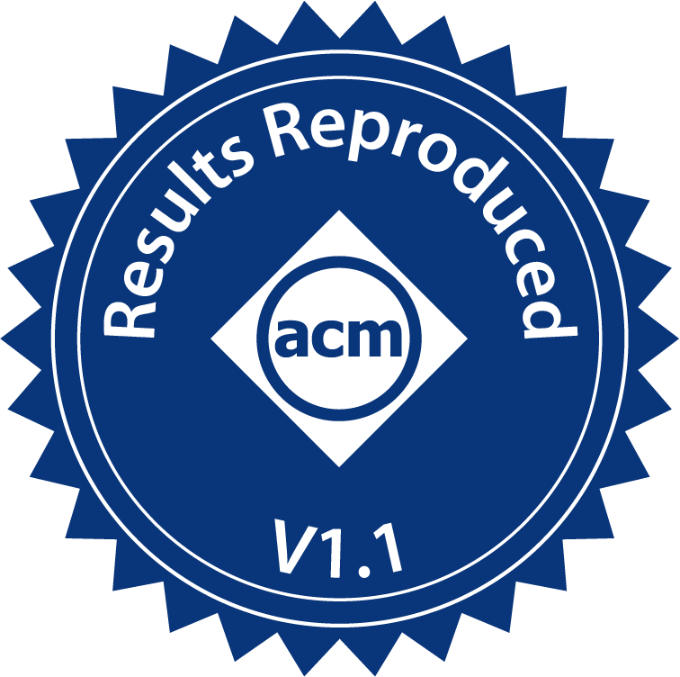
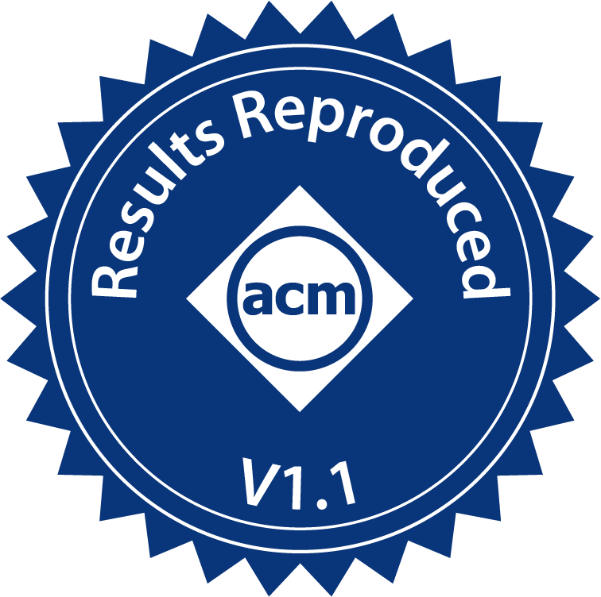

2024
-
Apparate: Rethinking Early Exits to Tame Latency-Throughput Tensions in ML Serving
Yinwei Dai*, Rui Pan*, Anand Iyer, Kai Li, Ravi Netravali 

ACM SOSP 2024
Efficient InferenceMachine learning (ML) inference platforms are tasked with balancing two competing goals: ensuring high throughput given many requests, and delivering low-latency responses to support interactive applications. Unfortunately, existing platform knobs (e.g., batch sizes) fail to ease this fundamental tension, and instead only enable users to harshly trade off one property for the other. This paper explores an alternate strategy to taming throughput-latency tradeoffs by changing the granularity at which inference is performed. We present Apparate, a system that automatically applies and manages early exits (EEs) in ML models, whereby certain inputs can exit with results at intermediate layers. To cope with the time-varying overhead and accuracy challenges that EEs bring, Apparate repurposes exits to provide continual feedback that powers several novel runtime monitoring and adaptation strategies. Apparate lowers median response latencies by 40.5-91.5% and 10.0-24.2% for diverse CV and NLP classification workloads, and median time-per-token latencies by 70.4-77.9% for generative scenarios, without affecting throughputs or violating tight accuracy constraints. -
Improving DNN Inference Throughput Using Practical, Per-Input Compute Adaptation
Anand Iyer, Mingyu Guan, Yinwei Dai, Rui Pan, Swapnil Gandhi, Ravi Netravali
ACM SOSP 2024
Efficient InferenceMachine learning inference platforms continue to face high request rates and strict latency constraints. Existing solutions largely focus on compressing models to substantially lower compute costs (and time) with mild accuracy degradations. This paper explores an alternate (but complementary) technique that trades off accuracy and resource costs on a per-input granularity: early exit models, which selectively allow certain inputs to exit a model from an intermediate layer. Though intuitive, early exits face fundamental deployment challenges, largely owing to the effects that exiting inputs have on batch size (and resource utilization) throughout model execution. We present E3, the first system that makes early exit models practical for realistic inference deployments. Our key insight is to split and replicate blocks of layers in models in a manner that maintains a constant batch size throughout execution, all the while accounting for resource requirements and communication overheads. Evaluations with NLP and vision models show that E3 can deliver up to 1.74× improvement in goodput (for a fixed cost) or 1.78× reduction in cost (for a fixed goodput). Additionally, E3's goodput wins generalize to autoregressive LLMs (2.8-3.8×) and compressed models (1.67×).